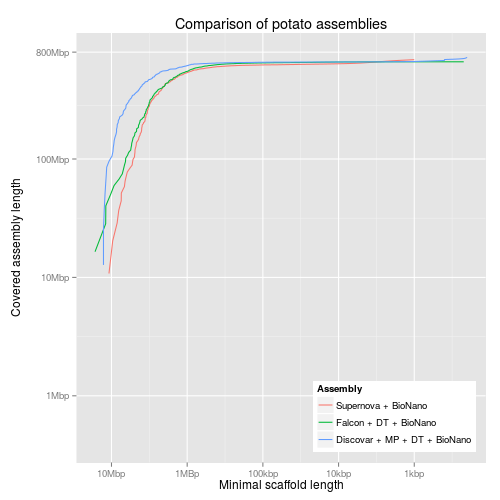
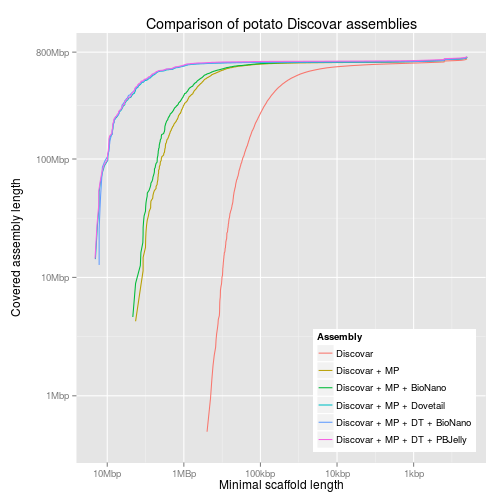
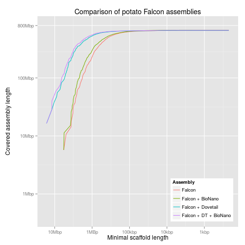
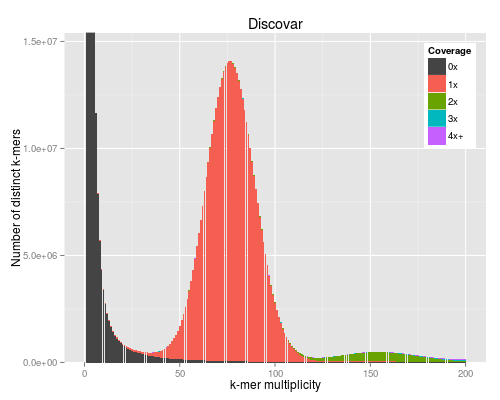
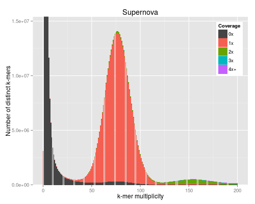
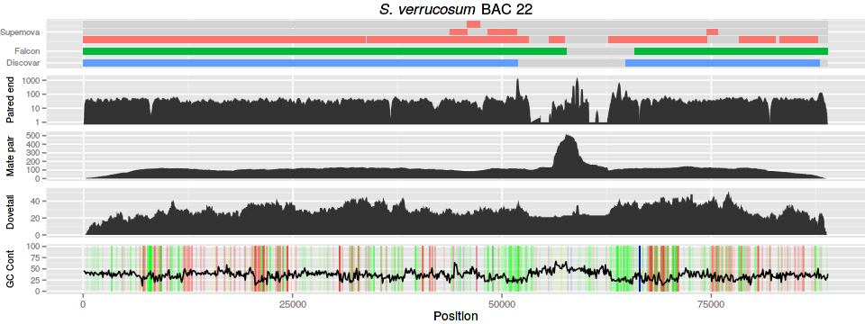
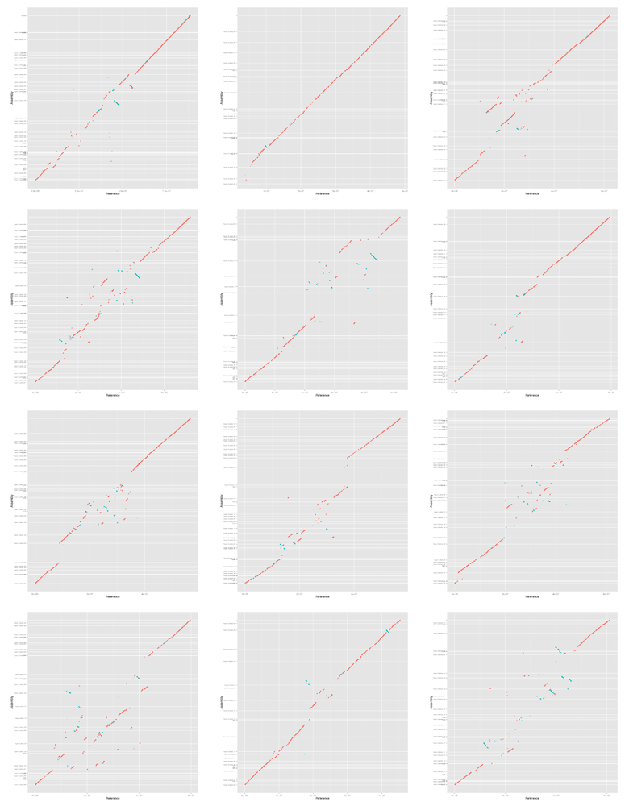
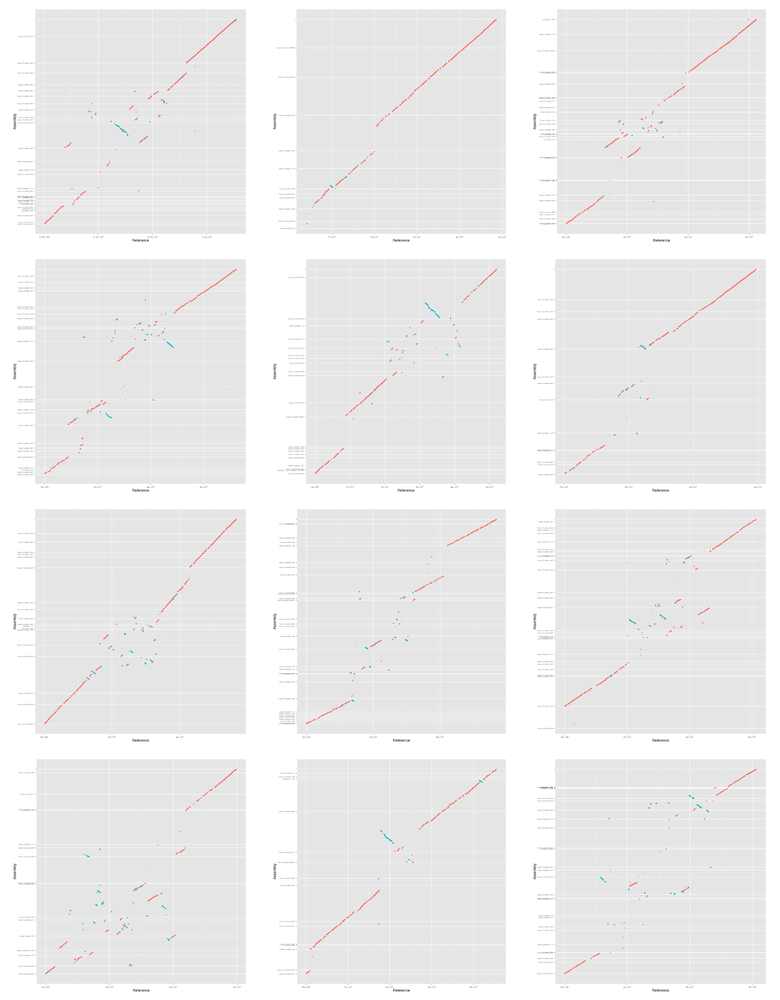
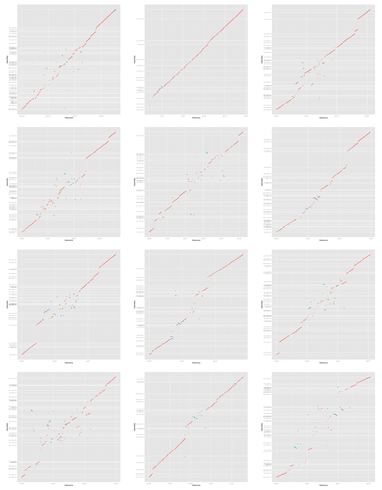

Figures for potato paper
1 Introduction
This document contains all of the code needed to generate the figures for the potato paper from the raw data. It can be executed with org-mode to generate the figures automatically. The following org-mode settings are required:
;;; use bash to evaluate shell code (setq org-babel-sh-command "bash") ;;; export with CSS classes instead of explicit colours ;;; this uses the included CSS for syntax highlighting ;;; instead of your own emacs colours (setq org-html-htmlize-output-type 'css) (setq org-html-htmlize-font-prefix "org-") ;;; the same but with bootstrap export, requires `ox-twbs' (setq org-twbs-htmlize-output-type 'css) (setq org-twbs-htmlize-font-prefix "org-")
The code in this document will read input data from the data directory, make
intermediate files in an output directory, and put the final figures in a
figures directory.
#!/bin/bash mkdir -p output figures
2 Cumulative content
These plots show the cumulative content of the assemblies as successively smaller contigs are added in. The table gives the names of the assemblies and the filenames we use for each. Much of the code in this section uses this table. It is read into the code blocks line by line into the name and filename variables.
| name | filename |
|---|---|
| Supernova + BioNano | 10x-bn |
| Supernova | 10x |
| Discovar | discovar-contig |
| Discovar + MP + DT + BioNano | discovar-mp-dt-bn |
| Discovar + MP + Dovetail | discovar-mp-dt |
| Discovar + MP + DT + PBJelly | discovar-mp-dt-jelly |
| Discovar + MP + BioNano | discovar-mp-bn |
| Discovar + MP | discovar-mp |
| Falcon + BioNano | falcon-bn |
| Falcon + DT + BioNano | falcon-dt-bn |
| Falcon + Dovetail | falcon-dt |
| Falcon | falcon |
2.1 Code
First we calculate the lengths of the contigs/scaffolds in each assembly and sort in descending order of size.
#!/bin/bash IFS=',' while read name filename; do if [[ ! -s output/${filename}.length ]]; then echo "Calculating lengths of ${filename}..." gzip -cd data/${filename}.fasta.gz \ | awk ' /^>/ { if (len) { print len, name } split($0,s," ") name=substr(s[1],2) len=0 next } { len += length($0) } END { if (len) { print len, name } } ' \ | sort -nr -k1,1 \ > output/${filename}.length fi done <<< "$table"
Now we calculate the data for the plot. The minimum length of contigs considered and the total length of all contigs of that size or bigger.
#!/bin/bash IFS=',' while read name filename; do if [[ ! -s output/${filename}.minlen-cumulative ]]; then echo "Calculating cumulative lengths of ${filename}..." awk ' BEGIN { OFS="\t" last = 0 sum = 0 } { if($1 != last && last != 0) { print last, sum } last = $1 sum += $1 } ' \ output/${filename}.length \ > output/${filename}.minlen-cumulative fi done <<< "$table"
Now we prepare the table for ggplot by concatenating the minlen-cumulative
tables and putting the name of the assembly in the third column.
#!/bin/bash IFS=',' while read name filename; do awk -v OFS=',' -v fname="$filename" -v name="$name" \ ' { print $1,$2,fname,name } ' \ output/${filename}.minlen-cumulative done <<< "$table" \ > output/all-assemblies.minlen-cumulative
Now we can plot these lines using ggplot:
#!/usr/bin/env Rscript library("ggplot2") library("grid") library("scales") reverselog_trans <- function(base = exp(1)) { trans <- function(x) -log(x, base) inv <- function(x) base^(-x) trans_new(paste0("reverselog-", format(base)), trans, inv, log_breaks(base = base), domain = c(1e-100, Inf)) } input <- read.table("output/all-assemblies.minlen-cumulative", sep=",", col.names=c("minlen", "cumulative", "fname", "name")) ## "bigcomp" with the large assemblies bigcomp <- subset(input, fname %in% c("10x-bn", "falcon-dt-bn", "discovar-mp-dt-bn")) bigcomp$name <- factor(bigcomp$name, levels=c("Supernova + BioNano", "Falcon + DT + BioNano", "Discovar + MP + DT + BioNano")) bigcompplot <- ggplot(bigcomp, aes(x=minlen, y=cumulative, colour=name)) + scale_x_continuous(trans=reverselog_trans(10), breaks=c(10000000,1000000,100000,10000,1000), labels=c("10Mbp", "1MBp", "100kbp", "10kbp", "1kbp")) + scale_y_log10(limits=c(400000,800000000), breaks=c(800000000,100000000,10000000,1000000), labels=c("800Mbp", "100Mbp", "10Mbp", "1Mbp")) + xlab("Minimal scaffold length") + ylab("Covered assembly length\n") + ggtitle("Comparison of potato assemblies") + labs(colour="Assembly") + geom_line() + theme(legend.justification=c(1,0),legend.position=c(1,0)) ## discovar comp dvcomp <- subset(input, fname %in% c("discovar-contig", "discovar-mp", "discovar-mp-bn", "discovar-mp-dt", "discovar-mp-dt-jelly", "discovar-mp-dt-bn")) dvcompplot <- ggplot(dvcomp, aes(x=minlen, y=cumulative, colour=name)) + scale_x_continuous(trans=reverselog_trans(10), breaks=c(10000000,1000000,100000,10000,1000), labels=c("10Mbp", "1MBp", "100kbp", "10kbp", "1kbp")) + scale_y_log10(limits=c(400000,800000000), breaks=c(800000000,100000000,10000000,1000000), labels=NULL) + xlab("Minimal scaffold length") + ylab(NULL) + ggtitle("Comparison of potato Discovar assemblies") + labs(colour="Assembly") + geom_line() + theme(legend.justification=c(1,0),legend.position=c(1,0)) dvcompplotwaxis <- dvcompplot + scale_y_log10(limits=c(400000,800000000), breaks=c(800000000,100000000,10000000,1000000), labels=c("800Mbp", "100Mbp", "10Mbp", "1Mbp")) + ylab("Covered assembly length\n") ## pacbio comp pbcomp <- subset(input, fname %in% c("falcon", "falcon-dt", "falcon-bn", "falcon-dt-bn")) pbcompplot <- ggplot(pbcomp, aes(x=minlen, y=cumulative, colour=name)) + scale_x_continuous(trans=reverselog_trans(10), breaks=c(10000000,1000000,100000,10000,1000), labels=c("10Mbp", "1MBp", "100kbp", "10kbp", "1kbp")) + scale_y_log10(limits=c(400000,800000000), breaks=c(800000000,100000000,10000000,1000000), labels=NULL) + xlab("Minimal scaffold length") + ylab(NULL) + ggtitle("Comparison of potato Falcon assemblies") + labs(colour="Assembly") + geom_line() + theme(legend.justification=c(1,0),legend.position=c(1,0)) pbcompplotwaxis <- pbcompplot + scale_y_log10(limits=c(400000,800000000), breaks=c(800000000,100000000,10000000,1000000), labels=c("800Mbp", "100Mbp", "10Mbp", "1Mbp")) + ylab("Covered assembly length\n")
Make PDF versions:
source(file="cumulative-content.R") pdf(file="figures/bigcompplot.pdf", width=5, height=5) print(bigcompplot) dev.off() pdf(file="figures/dvcompplot.pdf", width=5, height=5) print(dvcompplot) dev.off() pdf(file="figures/pbcompplot.pdf", width=5, height=5) print(pbcompplot) dev.off() pdf(file="figures/all.pdf", width=15, height=5) grid.draw(cbind(ggplotGrob(bigcompplot), ggplotGrob(dvcompplot), ggplotGrob(pbcompplot), size="last")) dev.off()
2.2 Figures



3 KAT plots
3.1 Code
For the KAT plots we have to count k-mers in the Discovar library reads and
the assemblies. The read files LIB12786_R1.fastq and LIB12786_R2.fastq
need to be in the data directory to run KAT as below. This generates three
matrix files with filenames ending in -main.mx. KAT takes a long time and a
lot of memory to run so we provide these matrix files.
for asm in discovar-contig falcon-pilon 10x; do kat comp -t 8 -o data/kat-comp-${asm} \ 'data/LIB12786_R?.fastq' \ data/${asm}.fasta done
KAT comes with its own plotting tools using Python and matplotlib, but we use the ggplot version to match the other figures in the paper.
#!/usr/bin/env Rscript args <- commandArgs() matrixFile <- args[1] maxMul <- as.integer(args[2]) minCov <- as.integer(args[3]) covBands <- as.integer(args[4]) readsName <- args[5] genName <- args[6] transpose <- FALSE isReads <- TRUE library("reshape2") library("ggplot2") library("grid") ## returns list of n colours equally spaced in HSL, like ggplot default gg_color_hue <- function(n) { hues = seq(15, 375, length=n+1)[1:n] hcl(h=hues, l=60, c=120) } matrix <- read.table(matrixFile) if (transpose) { matrix <- t(matrix) } matrix <- matrix[1:(maxMul+1),] lastcolumn <- rowSums(matrix[,-seq_len(minCov+covBands-2)]) matrix <- matrix[,(minCov+1):(minCov+covBands-1)] matrix <- cbind(matrix, lastcolumn) counts <- data.frame(cbind(as.matrix(seq(0,maxMul)), matrix)) names(counts) <- c("multiplicity", sapply(seq(minCov,minCov+covBands-1), function (n) sprintf("%dx", n))) names(counts)[length(names(counts))] <- sprintf("%s+", names(counts)[length(names(counts))]) counts <- melt(counts, id.vars=c("multiplicity"), variable.name="coverage", value.name="count") ## a big peak at 1 is often expected and not interesting, but any other peak is totals <- rowSums(matrix) peaksx <- which(diff(sign(diff(totals))) == -2) peaksy <- totals[peaksx] if (!isReads) { peaky <- max(totals) } else if (peaksx[1] == 1) { peaky <- max(peaksy[-1]) } else { peaky <- max(peaksy) } p <- ggplot(counts, aes(x=multiplicity, y=count, fill=coverage)) p <- p + geom_bar(stat="identity") if (minCov == 0) { p <- p + scale_fill_manual(values=c("#444444", gg_color_hue(covBands-1))) } else { p <- p + scale_fill_manual(values=c(gg_color_hue(covBands))) } p <- p + coord_cartesian(xlim=c(0,maxMul)) p <- p + coord_cartesian(ylim=c(0,peaky*1.1)) p <- p + labs(title=sprintf("%s", genName), x="k-mer multiplicity", y="Number of distinct k-mers", fill="Coverage") p <- p + theme(legend.justification=c(1,1),legend.position=c(1,1))
Make PDF versions:
commandArgs <- function() c("data/kat-comp-discovar-contig-main.mx", "200", "0", "5", "PCR free", "Discovar") source(file="plot-comp.R") pdf(file="figures/kat-comp-discovar.pdf", width=5, height=4, onefile=TRUE) print(p) dev.off() p1 <- p commandArgs <- function() c("data/kat-comp-falcon-pilon-main.mx", "200", "0", "5", "PCR free", "Falcon") source(file="plot-comp.R") pdf(file="figures/kat-comp-falcon.pdf", width=5, height=4, onefile=TRUE) print(p) dev.off() p2 <- p commandArgs <- function() c("data/kat-comp-10x-main.mx", "200", "0", "5", "PCR free", "Supernova") source(file="plot-comp.R") pdf(file="figures/kat-comp-10x.pdf", width=5, height=4, onefile=TRUE) print(p) dev.off() p3 <- p p2 <- p2 + scale_y_continuous(labels=NULL) + ylab(NULL) p3 <- p3 + scale_y_continuous(labels=NULL) + ylab(NULL) pdf(file="figures/kat-comp-all.pdf", width=15, height=5) grid.draw(cbind(ggplotGrob(p1), ggplotGrob(p2), ggplotGrob(p3), size="last")) dev.off()
3.2 Figures
The PNG output from R does not look very good for some reason.


4 BAC with difficult region
For the BAC plot we use a PacBio assembly of a BAC (labelled number 22). We
have several tracks of data: three contig alignments, three read alignments,
and a GC content and homopolymer track. The PacBio assembly of BAC 22 is
contained in bac22.fasta.
4.1 Contig alignment
For the contig alignments we use bwa-mem.
| name | filename |
|---|---|
| Supernova | 10x |
| Discovar | discovar-contig |
| Falcon | falcon |
#!/bin/bash bwa index data/bac22.fasta IFS=',' while read name filename; do bwa mem data/bac22.fasta data/${filename}.fasta \ | samtools view -b - > data/pb-${filename}.bam sambamba sort data/pb-${filename}.bam done <<< "$table"
The sam-to-R.py script takes multiple SAM input files and outputs a table
for plotting with ggplot. Optional parameters are -m for minimum length of
the alignment and -i for minimum percent identity, both of which are
calculated from the CIGAR string for each alignment in the SAM file. The first
positional parameter provides a short name for each of the following
alignments, which is embedded in the table, and then the alignment files
follow. We use process substitution so we can use BAM files, ensuring that the
SAM header is present by using the -h flag for samtools view.
#!/usr/bin/env python import sys import argparse def cigar_to_aln_len(cigar): current_number = "" total_length = 0 for c in cigar: if c in "0123456789": current_number += c elif c in "MD=X": total_length += int(current_number) current_number = "" else: current_number = "" return total_length def parse_opts(opt): opts = {} for text_opt in opt.split(): [name,typ,value] = text_opt.split(":") if typ == "A": opts[name] = value elif typ == "i": opts[name] = int(value) elif typ == "f": opts[name] = float(value) elif typ == "Z": opts[name] = value elif typ == "H": opts[name] = bytearray(value.decode("hex")) elif typ == "B": arr = value.split(",") arrtyp = arr[0] arr = arr[1:] if arrtyp == "f": arr = [float(f) for f in arr] else: arr = [int(f) for f in arr] opts[name] = arr return opts # ----- command line parsing ----- parser = argparse.ArgumentParser( prog="sam-to-svg", description="Turns SAM file into SVG showing alignments.") parser.add_argument("names", type=str, help="Name of alignments, comma separated.") parser.add_argument("sorted_sam_file", type=str, nargs="+", help="Sorted SAM files.") parser.add_argument("-l", "--ref_length", type=int, help="Length of reference " "(taken from SAM file if header is present.") parser.add_argument("-m", "--min_length", type=int, help="Minimum length of alignment to draw.") parser.add_argument("-i", "--min_identity", type=float, help="Minimum percent identity of match.") args = parser.parse_args() # ----- end command line parsing ----- names = args.names.split(",") length = args.ref_length lanes = [] lanesy = [] lanelens = [] if len(names) < len(args.sorted_sam_file): sys.exit("Error: fewer names than SAM files given.") n = 0 minlane = 0 nexty = 0 for sam_file in args.sorted_sam_file: samf = open(sam_file) reflengths = {} refname = "" for line in samf: if line[0] == "@": if line[1:3] == "SQ": split = line[3:].split() for bit in split: if bit[0:2] == "SN": refname = bit[3:] if bit[0:2] == "LN": reflengths[refname] = int(bit[3:]) elif line[1:3] == "PG": split = line[3:].split() else: [qname,flag,rname,pos,mapq,cigar,rnext,pnext,tlen,seq,qual,opt] \ = line.split(None,11) aln_len = cigar_to_aln_len(cigar) opts = parse_opts(opt) if rname == "*": continue if args.min_identity is not None and "NM" not in opts: sys.exit("No NM value in SAM file, " "can't calculate percent identity.") if ((args.min_length is None or aln_len >= args.min_length) and (args.min_identity is None or ((float(aln_len - opts["NM"])/aln_len)*100 >= args.min_identity))): inserted = False for lane in lanes[minlane:]: if len(lane) == 0: lane.append((int(pos),int(pos)+aln_len,n)) inserted = True break elif lane[-1][1] < int(pos): lane.append((int(pos),int(pos)+aln_len,n)) inserted = True break if not inserted: lanes.append([(int(pos),int(pos)+aln_len,n)]) lanelens.append(reflengths[rname]) lanesy.append(nexty) nexty += 1 minlane = len(lanes) samf.close() n += 1 nexty += 0.5 sys.stdout.write("{:s}\t{:s}\t{:s}\t{:s}\n" .format("track","file","beg","end")) n = 0 for lane,lanelen in zip(lanes,lanelens): sys.stdout.write("{:.1f}\t{:s}\t{:d}\t{:d}\n" .format(lanesy[n], "space", 1, lanelen)) for aln in lane: sys.stdout.write("{:.1f}\t{:s}\t{:d}\t{:d}\n" .format(lanesy[n], names[aln[2]], aln[0], aln[1])) n += 1
To generate the table for our three contig tracks we run:
#!/bin/bash python sam-to-R.py \ -m 1000 -i 99.9 dv,fal,10x \ <(samtools view -h data/pb-discovar-contig.sorted.bam) \ <(samtools view -h data/pb-falcon.sorted.bam) \ <(samtools view -h data/pb-10x.sorted.bam) \ > output/pb-r-table
4.2 Read alignment
For the read alignment we use bowtie2. The ord variable tells the aligner if
the reads are in forward-reverse or reverse-forward order.
| name | filename | ord |
|---|---|---|
| Discovar | discovar | fr |
| Mate pair | mp | rf |
| Dovetail | dovetail | fr |
We align each set of reads and suppress the unaligned reads to keep the file size smaller. Then they are filtered for reads with a high mapping quality and an edit distance with respect to the reference of no more than 1.
#!/bin/bash bowtie2-build data/bac22.fasta data/bac22 IFS=',' while read name filename ord; do bowtie2 -p 8 --no-unal --${ord} -x data/bac22 \ -1 data/${filename}-R1.fastq -2 data/${filename}-R2.fastq \ | samtools view -b - > data/${filename}-aln.bam sambamba view -f bam -F "mapping_quality >= 30 and [NM] <= 1" \ data/${filename}-aln.bam \ > data/${filename}-aln-acc.bam done <<< "$table"
For the paired-end (Discovar) we simply generate the depth at each reference position.
#!/bin/bash sambamba sort data/discovar-aln-acc.bam samtools depth -a data/discovar-aln-acc.sorted.bam \ > output/discovar-aln-acc.cov
For the mate pair and Dovetail we calculate the coverage the aligned fragments. First we need to sort the alignments by name to bring the pairs together:
#!/bin/bash for filename in mp dovetail; do samtools sort -n -O bam -T data/${filename}-aln-acc.sorted.name.bam \ <(samtools view -bh -F 1804 -q 1 data/${filename}-aln-acc.bam) \ > data/${filename}-aln.sorted.name.bam done
Now we use bedtools to make a bed file with the physical fragments:
#!/bin/bash for filename in mp dovetail; do bamToBed -i data/${filename}-aln.sorted.name.bam -bedpe \ | cut -f 1,2,6 | sort -k1,1 > output/${filename}.phys.bed done
And finally calculate the coverage at each reference position:
#!/bin/bash for filename in mp dovetail; do bedtools genomecov -d -i output/${filename}.phys.bed \ -g data/bac22.fasta.fai > output/${filename}.phys.cov done
4.3 GC content and homopolymers
For the GC content we use bedtools. We make 100bp windows and calculate the GC content in the windows.
#!/bin/bash bedtools makewindows -g data/bac22.fasta.fai -w 100 \ > output/bac22.100bps.bed bedtools nuc -fi data/bac22.fasta -bed output/bac22.100bps.bed \ > output/bac22.gc.txt awk -v w=100 -vOFS='\t' -vFS='\t' 'NR > 1 {print $1,($2+$3)/2,$5}' \ output/bac22.gc.txt \ > output/bac22.gc.100bps
The homopolymers are calculated using the following python script:
#!/usr/bin/env python # returns positions of homopolymers for each contig import sys import os import argparse import threading import time from collections import namedtuple def progress(fp, fs, fin): progress = ["-", "\\", "|", "/"] prog = 0 while not fin.isSet(): if sys.stderr.isatty(): sys.stderr.write("\r{:3.0f}% {:s}\b" .format(fp.tell()/float(fs)*100, progress[prog])) sys.stderr.flush() prog = (prog + 1)%4 time.sleep(0.1) else: sys.stderr.write("{:3.0f}% " .format(fp.tell()/float(fs)*100)) time.sleep(5) else: if sys.stderr.isatty(): sys.stderr.write("\r100% *") sys.stderr.write("\n") return Homopolymer = namedtuple("Homopolymer", "seqname base length beg end") # ----- command line parsing ----- parser = argparse.ArgumentParser( description="Finds positions of homopolyomers.") parser.add_argument("file", type=str, help="Fasta file.") parser.add_argument("min_length", type=int, help="Minimum length of homopolymer.") parser.add_argument("-s", "--case_sensitive", dest="case", action="store_true", help="Case sensitive bases.") parser.add_argument("-b", "--bases", type=str, help="Comma separated list of bases to consider.") parser.set_defaults(case=False) args = parser.parse_args() # ----- end command line parsing ----- fasta_size = os.path.getsize(args.file) fasta = open(args.file) sys.stderr.write("Reading {:s}...\n".format(args.file)) fin = threading.Event() pthread = threading.Thread(name = "progress", target = progress, args = (fasta, fasta_size, fin)) homopolymers = [] name = "" pos = 0 run = 0 last_base = "" try: pthread.start() for line in fasta: if line[0] == '>': if run >= args.min_length: homopolymers.append( Homopolymer(name, last_base, run, pos-run+1, pos)) name = line[1:-1] pos = 0 run = 0 last_base = "" continue for base in line[:-1]: pos += 1 if not args.case: base = base.upper() if last_base == "": last_base = base run = 1 elif base == last_base: run += 1 else: if run >= args.min_length: homopolymers.append( Homopolymer(name, last_base, run, pos-run, pos-1)) run = 1 last_base = base if run >= args.min_length: homopolymers.append( Homopolymer(name, last_base, run, pos-run+1, pos)) fin.set() pthread.join() except KeyboardInterrupt: fin.set() pthread.join() isolate_file.close() sys.stderr.write("\n") sys.exit(1) fasta.close() if args.bases is not None: if args.case: bases = set(args.bases.split(",")) else: bases = set(args.bases.upper().split(",")) else: bases = None for homo in homopolymers: if bases is None or homo.base in bases: sys.stdout.write("{:s}\t{:s}\t{:d}\t{:d}\t{:d}\n" .format(*homo))
#!/bin/bash python ~/code/tools/homopolymers.py data/bac22.fasta 4 \ > output/bac22.homopolymers.4
4.4 Figure
Finally, after generating the data we can plot it all using ggplot.
#!/usr/bin/env Rscript gg_colour_hue <- function(n) { hues = seq(15, 375, length=n+1)[1:n] c(hcl(h=hues, l=65, c=100)) } library("ggplot2") library("grid") library("Cairo") args <- commandArgs(TRUE) if (length(args) < 9) { print("usage: prog title output dvc mpc dtc gc hom con conorder") quit() } title <- args[1] output <- args[2] dvcf <- args[3] mpcf <- args[4] dtcf <- args[5] gcf <- args[6] homf <- args[7] conf <- args[8] conorder <- args[9] dvc <- read.table(dvcf, col.names=c("chr", "pos", "cov")) mpc <- read.table(mpcf, col.names=c("chr", "pos", "cov")) dtc <- read.table(dtcf, col.names=c("chr", "pos", "cov")) gc <- read.table(gcf, col.names=c("chr", "pos", "gc")) hom <- read.table(homf, col.names=c("chr", "base", "length", "beg", "end")) con <- read.table(conf, header=TRUE) conorder <- unlist(strsplit(conorder, split=",")) con$file <- factor(con$file, levels=c(conorder, "space")) plotmargin <- unit(c(0,0,0,4), "mm") conp <- ggplot(con, aes(ymin=track+0.1, ymax=track+0.9, xmin=beg, xmax=end, fill=file)) + guides(fill=FALSE) + xlab(NULL) + ylab(NULL) + scale_x_continuous(labels=NULL) + scale_y_continuous(breaks=c(0.5,2.0,4.5), labels=c("Discovar", "Falcon", "Supernova")) + scale_fill_manual(values=c(gg_colour_hue(3),"light grey")) + theme(axis.ticks.x = element_blank(), axis.ticks.y = element_blank(), axis.text.y = element_text(size=8), plot.margin=plotmargin) + geom_rect() + ggtitle(expression(paste(italic("S. verrucosum"), " BAC 22"))) dvcmax <- 1000 dvcp <- ggplot(dvc, aes(x=pos, ymin=0, ymax=cov)) + xlab(NULL) + ylab("Paired end") + scale_x_continuous(labels=NULL) + scale_y_log10(breaks=c(1,10,100,1000)) + theme(axis.ticks.x = element_blank(), axis.text.y = element_text(size=8), axis.title.y = element_text(size=9,vjust=0.1), plot.margin=plotmargin) + geom_ribbon() mpcp <- ggplot(mpc, aes(x=pos, ymin=0, ymax=cov)) + xlab(NULL) + ylab("Mate pair") + scale_x_continuous(labels=NULL) + theme(axis.ticks.x = element_blank(), axis.text.y = element_text(size=8), axis.title.y = element_text(size=9,vjust=0.1), plot.margin=plotmargin) + geom_ribbon() dtcp <- ggplot(dtc, aes(x=pos, ymin=0, ymax=cov)) + xlab(NULL) + ylab("Dovetail") + scale_x_continuous(labels=NULL) + theme(axis.ticks.x = element_blank(), axis.text.y = element_text(size=8), axis.title.y = element_text(size=9,vjust=0.1), plot.margin=plotmargin) + geom_ribbon() pad <- 50 gcp <- ggplot(gc) + geom_rect(data=subset(hom,length > 4 & base != "N"), aes(ymin=0,ymax=100, xmin=beg-pad, xmax=end+pad, fill=base, alpha=length)) + geom_line(aes(x=pos, y=gc*100)) + guides(alpha=FALSE, fill=FALSE) + scale_fill_manual(name="Base", values=c( "A" = "red", "C" = "blue", "G" = "yellow", "T" = "green", "N" = "black")) + xlab("Position") + ylab("GC Cont") + theme(plot.margin=plotmargin, axis.text.y = element_text(size=8), axis.title.y = element_text(size=9,vjust=0.1)) dvcg <- ggplotGrob(dvcp) mpcg <- ggplotGrob(mpcp) dtcg <- ggplotGrob(dtcp) gcg <- ggplotGrob(gcp) cong <- ggplotGrob(conp) pdf(file=sprintf("%s.pdf",output), height=4.5, width=12) grid.draw(rbind(cong, dvcg, mpcg, dtcg, gcg, size="last")) dev.off() CairoPNG(file=sprintf("%s.png",output), height=4.5, width=12, units="in", dpi=80) grid.draw(rbind(cong, dvcg, mpcg, dtcg, gcg, size="last")) dev.off()
#!/bin/bash ./bac-graphs2.R \ bac22 \ figures/bac22-pacbio \ output/discovar-aln-acc.cov \ output/mp.phys.cov \ output/dovetail.phys.cov \ output/bac22.gc.100bps \ output/bac22.homopolymers.4 \ output/pb-r-table \ 10x,fal,dv

5 Gene content
| name | filename |
|---|---|
| Supernova + BioNano | 10x-bn |
| Discovar + MP + DT + BioNano | discovar-mp-dt-bn |
| Falcon + DT + BioNano | falcon-dt-bn |
| Tuberosum reference | tuberosum |
We align the transcripts of the S. tuberosum genome to our assemblies using BLAST version 2.2.31. The transcripts were retrieved from here: http://solanaceae.plantbiology.msu.edu/data/PGSC_DM_v3.4_transcript-update.fasta.zip
for asm in 10x-bn discovar-mp-dt-bn falcon-dt-bn; do blastn -outfmt '6 qseqid qstart qend qlen sseqid sstart send slen pident length evalue' \ -evalue 1e-3 \ -subject ${asm}.fasta \ -query PGSC_DM_v3.4_transcript-update.fasta \ > ${asm}-transcripts.blastn done
We can adjust the minimum percentage identity of BLAST alignments that we
consider and calculate the percent coverage of each transcript in the
alignment. We use the transcript-coverage.py script to calculate the percent
coverage for a transcript:
#!/usr/bin/env python import sys current_tid = None current_tlen = 0 last_start = 0 last_end = 0 seg_lengths = [] for line in sys.stdin: (tid,tstart,tend,tlen, seqid,seqstart,seqend,seqlen, pident,length,evalue) = line.split() tstart = int(tstart) tend = int(tend) tlen = int(tlen) seqstart = int(seqstart) seqend = int(seqend) seqlen = int(seqlen) if tid != current_tid: if current_tid is not None: sys.stdout.write("{:s}\t{:d}\t{:d}\t{:f}\n" .format(current_tid,current_tlen, sum(seg_lengths), float(sum(seg_lengths))/ current_tlen)) current_tid = tid current_tlen = tlen last_start = tstart last_end = tend seg_lengths = [last_end - last_start + 1] else: if tstart < last_start: sys.exit("Input file not sorted by transcript start!") if tstart <= last_end: # extend segment last_start = min(last_start, tstart) last_end = max(last_end, tend) seg_lengths[-1] = last_end - last_start + 1 else: # new segment last_start = tstart last_end = tlen seg_lengths.append(last_end - last_start + 1) if current_tid is not None: sys.stdout.write("{:s}\t{:d}\t{:d}\t{:f}\n" .format(current_tid,current_tlen, sum(seg_lengths), float(sum(seg_lengths))/ current_tlen))
This is run after filtering the alignments with awk and sorting by alignment start position:
IFS=',' while read name filename; do for i in {85..100}; do ./make-coverages data/${filename}-transcripts.blastn ${i} output/ done done <<EOF ${table} EOF
Now we can count the number of transcripts which appear with various thresholds:
for filename in 10x-bn discovar-mp-dt-bn falcon-dt-bn; do for cov in $(seq 0.85 0.01 1.0); do for i in {85..100}; do num=$(awk -v c=${cov} '$4 >= c' output/${filename}-transcripts-i${i}.coverage | wc -l) echo -ne "${filename}\t${cov}\t${i}\t${num}\n" done done done > output/transcript-asm-cov-id-count
#!/usr/bin/env Rscript library("ggplot2") library("reshape2") library("grid") t <- read.table("../genes-table", header=TRUE) tm <- melt(t, id.vars="asm", variable.name="type", value.name="genes") p <- ggplot(tm, aes(x=asm, y=genes, fill=type)) + scale_fill_discrete(name="Type", labels=c("cegcom"="Cegma complete", "cegpar"="Cegma partial", "buscom"="Busco complete", "buspar"="Busco partial", "busmis"="Busco missing")) + scale_x_discrete(name="Assembly") + scale_y_continuous(name="Number of genes") + geom_bar(stat="identity", position="dodge") + geom_bar(stat="identity", position="dodge", colour="black", show_guide=FALSE) + theme(legend.position="bottom", legend.key.size=unit(3, "mm"), legend.text=element_text(size=8),legend.title=element_text(size=8), plot.margin=unit(c(2,2,0,0), "mm")) + guides(fill=guide_legend(nrow=2,byrow=TRUE)) pdf(file="genes-bar.pdf", width=4, height=4) print(p) dev.off()
6 Synteny to S. tuberosum
6.1 Code
We generate alignments between the S. tuberosum reference and our assemblies
using nucmer. We are interesting in our three "large" hybrid assemblies.
| name | filename |
|---|---|
| Supernova + BioNano | 10x-bn |
| Discovar + MP + DT + BioNano | discovar-mp-dt-bn |
| Falcon + DT + BioNano | falcon-dt-bn-2 |
The file falcon-dt-bn-2 is generated by replacing the pipe symbols in the
fasta file with underscores because some or all of mummer's scripts do not
support the pipe symbol.
#!/bin/bash gzip -cd data/falcon-dt-bn.fasta.gz \ | sed 's/|/_/g' > data/falcon-dt-bn-2.fasta
The following code requires mummer and the S. tuberosum pseudomolecule
assembly version 4.03 in the data directory. It is available here:
http://solanaceae.plantbiology.msu.edu/pgsc_download.shtml
#!/bin/bash IFS=',' while read name filename; do nucmer -c 65 -l 65 \ -p output/${filename} \ data/PGSC_DM_v4.03_pseudomolecules.fasta \ data/${filename}.fasta done <<< "$table"
First we filter the delta to only include alignments of at least 90% identity and 10kb in length.
#!/bin/bash IFS=',' while read name filename; do if [[ ! -s output/${filename}-i${i}-l${l}.delta ]]; then echo "Filtering delta..." delta-filter -q -r -i ${i} -l ${l} output/${filename}.delta \ > output/${filename}-i${i}-l${l}.delta fi done <<< "$table"
Now we generate the coords files which we'll need later to sort and orientate the scaffolds for each chromosome. By default mummer will plot every scaffold in the assembly even if we select only one chromosome of the reference, therefore we need to find which scaffolds actually have alignments with each reference sequence.
#!/bin/bash IFS=',' while read name filename; do if [[ ! -s output/${filename}-i${i}-l${l}.coords ]]; then echo "Making coords..." show-coords -THrcl output/${filename}-i${i}-l${l}.delta \ > output/${filename}-i${i}-l${l}.coords fi done <<< "$table"
Mummer will also require the length of each assembly scaffold that we wish to plot.
#!/bin/bash IFS=',' while read name filename; do if [[ ! -s output/${filename}.length ]]; then echo "Calculating lengths of ${filename}..." cat data/${filename}.fasta \ | awk ' /^>/ { if (len) { print len, name } split($0,s," ") name=substr(s[1],2) len=0 next } { len += length($0) } END { if (len) { print len, name } } ' \ | sort -nr -k1,1 \ > output/${filename}.length fi done <<< "$table"
Finally we make a mummerplot for each assembly and each chromosome. We are
going to manually select which assembly scaffolds to display and also manually
order and orientate them. mummerplot attempts to do the ordering and
orientation itself but doesn't do a very good job. We want to order the
scaffolds such that most of the bases in the alignment appear on the
diagonal. We do this by sorting by the average base position in the alignment
of each scaffold. We want to orientate the scaffolds such that as much as
possible is "forwards" (more red than blue in the plots). We do this by
counting how much of the alignment length is forward and reverse and setting
the orientation accordingly.
#!/bin/bash IFS=',' while read name filename; do for chr in {01..12}; do echo "Doing chr ${chr}..." # find scaffold order and orientation awk '$12 == "ST4.03ch'${chr}'" {print $1,$2,$3,$4,$13;}' \ output/${filename}-i${i}-l${l}.coords \ | sort -n -k1,1 \ | sort -s -k5 \ | awk ' BEGIN { lastn=""; lastm=0; lastb=0; lastl=0; } { n=$5; s=$1; e=$2; p=(s+e)/2; b=e-s; l=$4-$3; if (lastn=="") { lastn=n; lastm=p; lastb=b; lastl=l; } else if (lastn!=n) { print lastn,int(lastm),lastl lastn=n; lastm=p; lastb=b; lastl=l; } else { lastm=(lastm*lastb+p*b)/(lastb+b); lastb+=b; lastl+=l } } END { print lastn,int(lastm),lastl } ' \ | sort -k1,1 \ > \ output/${filename}-chr${chr}-contigs-i${i}-l${l}.scaf-pos-orn join -1 1 -2 2 \ output/${filename}-chr${chr}-contigs-i${i}-l${l}.scaf-pos-orn \ <(sort -k2,2 output/${filename}.length) \ | sort -n -k2,2 \ | awk ' {if ($3>0) { sign="+" } else { sign="-" } printf "%s\t%d\t%s\n", $1, $4, sign;} ' \ > output/${filename}-chr${chr}-contigs-i${i}-l${l}.mumlist mummerplot -t png -r ST4.03ch${chr} \ -p output/mummerplot-${filename}-i${i}-l${l}-${chr} \ output/${filename}-i${i}-l${l}.delta \ -Q output/${filename}-chr${chr}-contigs-i${i}-l${l}.mumlist mv output/mummerplot-${filename}-i${i}-l${l}-${chr}.png figures/ done done <<< "$table"
For the rest of the paper we ggplot for the plots so we now convert the mummerplots to ggplot and plot them. The data is prepared with the following script:
#!/bin/bash set -e if [[ $# -lt 2 ]]; then echo "usage: mummer2ggplot inputprefix outputdir" exit 1 fi inputprefix=$1 outputdir=$2 # make coords cat ${inputprefix}.[fr]plot \ | awk '/^[1-9]/' \ | awk ' NR%2==1 {a=$1;b=$2} NR%2==0 {if($2>b) { print a,b,$1,$2,$3,"+" }else{ print a,b,$1,$2,$3,"-" }}' \ | sort -n \ > ${inputprefix}.ggplot # make ticks sed ':a;N;$!ba;s/\\\n//g' ${inputprefix}.gp \ | awk '/^set ytics/' \ | sed 's/set ytics ( //' \ | sed 's/ )//' \ | sed 's/, /\n/g' \ | sed 's/ /,/' \ | awk '{gsub(/"/, "", $1); print $1,$2;}' \ > ${inputprefix}.asmticks Rscript mummerplot.R ${outputdir}/$(basename ${inputprefix}) \ ${inputprefix}.ggplot ${inputprefix}.asmticks
Where mummerplot.R is:
#!/usr/bin/env Rscript library("ggplot2") args <- commandArgs(TRUE) if (length(args) < 3) { print("usage: prog output coords ticks") quit() } output <- args[1] coords <- args[2] ticks <- args[3] t <- read.table(coords, col.names=c("x1", "y1", "x2", "y2", "pid", "dir")) t$dir <- factor(t$dir, levels=c("+","-")) ticks <- read.table(ticks, sep=",", col.names=c("labels", "breaks")) p <- ggplot(t, aes(x=x1,xend=x2,y=y1,yend=y2,alpha=pid,colour=dir)) + geom_segment() + geom_point() + geom_point(aes(x2,y2)) + scale_x_continuous(name="Reference") + scale_y_continuous(name="Assembly", breaks=ticks$breaks, labels=ticks$labels, minor_breaks=NULL) + scale_colour_discrete(guide=FALSE) + scale_alpha_continuous(guide=FALSE) + theme(axis.text.y=element_text(size=6)) pdf(file=sprintf("%s-gg.pdf",output), width=7, height=6.5) print(p) dev.off() png(file=sprintf("%s-gg.png",output), width=800, height=800) print(p) dev.off()
6.2 Figures
Convert all the figures to ggplot:
IFS=',' while read name filename; do for chr in {01..12}; do ./mummer2ggplot \ output/mummerplot-${filename}-i${i}-l${l}-${chr} \ figures done done <<EOF $table EOF
Here is a quick preview of the figures.
IFS=',' while read name filename; do montage figures/mummerplot-${filename}-i${i}-l${l}-??-gg.png \ -geometry 240x240+10+5 -tile 3x4 \ figures/mummerplot-${filename}-i${i}-l${l}-all-gg.png echo "*** ${name}" echo "[[file:figures/mummerplot-${filename}-i${i}-l${l}-all.png]]" done <<< "$table"
6.2.1 Supernova + BioNano

6.2.2 Discovar + MP + DT + BioNano

6.2.3 Falcon + DT + BioNano
